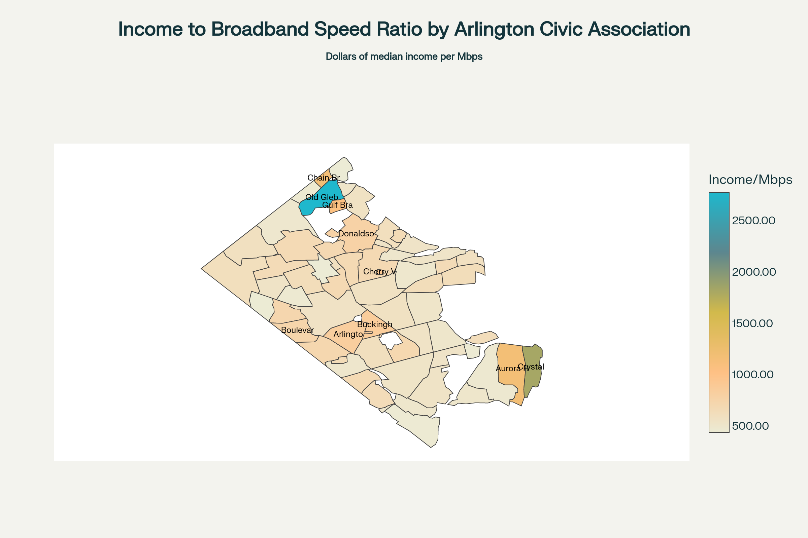

Guide to Creating Combined Local-Level Geographic Datasets
The Sub-County Data Gap in Local Government Policy Analysis
Local government policy analysts and decision makers face a critical challenge in accessing granular, policy-relevant data at the sub-county level. While county-level data has become increasingly available and standardized across the United States, the lack of systematic collection and dissemination of sub-county information creates significant limitations for municipal and local government officials who need to make informed decisions for their communities[1][2].
The fundamental issue lies in the fact that most public health and demographic surveillance data are “limited mostly to the county or state level,” creating a void where local decision makers need the most granular information[2]. This data gap is particularly problematic because local governments operate at a scale where county-level aggregated data often obscures critical variations in community needs, demographics, and outcomes that exist within county boundaries. For instance, a county may show adequate performance on aggregate measures while specific neighborhoods or sub-county areas experience significant challenges that require targeted policy interventions[3].
The shortage of sub-county data presents multiple barriers to effective local governance. Most critically, it hampers the ability of local officials to identify health disparities, infrastructure needs, and social inequities within their jurisdictions that may be masked by county-level aggregations[3]. This limitation is compounded by technical challenges inherent in small-area data collection, including “data and statistical reliability issues when using small case (numerator) and population (denominator) numbers” and confidentiality concerns where individual identification might be possible in areas with small populations[4]. These methodological constraints have led to systematic underinvestment in sub-county data infrastructure, creating a vicious cycle where the lack of reliable small-area data discourages further development of collection and analysis capabilities.
Furthermore, the absence of standardized sub-county data collection processes across different jurisdictions makes it difficult for local governments to benchmark their performance, share best practices, or coordinate regional responses to shared challenges[1]. While initiatives like the CDC’s Environmental Public Health Tracking Program have begun developing methodologies for aggregating census tracts to create more reliable sub-county geographies, these efforts remain limited in scope and do not address the full range of policy-relevant indicators that local decision makers require[4]. The result is that local government policy analysts often must make critical decisions about resource allocation, service delivery, and community development without access to the granular, locally-relevant data that would enable more targeted and effective interventions[5][6].
The Need for Purpose-Built Sub-County Datasets
The data collection challenges outlined above ultimately point to a more fundamental need: the construction of sub-county datasets that align with the geographies that matter most to local decision makers, rather than defaulting to existing statistical boundaries that may not reflect the functional reality of how communities operate, how services are delivered, or how policy interventions need to be targeted.
Local government officials require data for geographies that correspond to their actual spheres of influence and responsibility. This includes neighborhoods defined by social cohesion, economic activity, and shared infrastructure rather than arbitrary census tract boundaries[43]. It encompasses metro corridors where transit-oriented development policies need implementation[44], commercial districts where economic development strategies are focused, school catchment areas where educational interventions are planned, and service delivery zones where public health programs are deployed. These functional areas rarely align with the neat administrative boundaries of census tracts, ZIP codes, or county subdivisions that currently serve as the default units for most data collection efforts[45][46].
The imperative for purpose-built datasets becomes particularly acute when considering that many of the most pressing local policy challenges operate across multiple traditional boundary systems. For instance, addressing transportation equity requires understanding commuting patterns that span multiple census tracts and ZIP codes[47]. Tackling neighborhood-level health disparities requires data aggregation that reflects actual community boundaries rather than statistical convenience[48]. Economic development initiatives often need to target specific commercial corridors or industrial zones that bear no relationship to census geography[49].
The Geographic Boundary Misalignment Problem
However, constructing these purpose-built sub-county datasets presents significant methodological challenges, chief among them the pervasive problem of geographic boundary misalignment. This fundamental issue, known in geographic research as the Modifiable Areal Unit Problem (MAUP), occurs when spatial data aggregated into different boundary systems produces varying analytical results despite representing the same underlying phenomena[50].
The misalignment challenge manifests in multiple dimensions. Temporal misalignment occurs because different boundary systems change on different schedules - census tract boundaries are redrawn every decade, ZIP code boundaries change frequently based on postal service operational needs, municipal boundaries shift through annexation and incorporation, while school district boundaries may remain stable for years before sudden major reorganization[51][52]. This creates substantial difficulties in constructing longitudinal datasets that can track policy outcomes over time, as what appears to be change may actually reflect boundary modifications rather than real substantive shifts[53].
Spatial non-correspondence represents an even more complex challenge, where different boundary systems simply do not align geographically. ZIP codes, designed for mail delivery efficiency, cut across multiple municipalities and census tracts with no regard for local government jurisdictions[54][48]. A single school district may span three counties and encompass parts of more than a dozen ZIP codes[45]. Census tracts, while designed to be relatively stable, follow visible features and governmental boundaries that may not reflect the social or economic geography relevant to policy interventions[55].
Functional misalignment occurs when administrative boundaries fail to capture the actual geographic scope of the phenomena being studied or the policy interventions being planned. A neighborhood experiencing gentrification may span multiple census tracts, making it impossible to accurately measure displacement using standard geographic units. A metro corridor targeted for transit-oriented development may include portions of several ZIP codes, making it difficult to assess the impact of zoning changes or infrastructure investments using existing data aggregation approaches.
Scale dependency further complicates the boundary alignment problem, as the choice of geographic unit fundamentally alters analytical results. Research has demonstrated that up to 49 percent of a population can have their actual municipality misclassified when ZIP codes are used as proxies for local government jurisdiction[48]. Studies examining historical redlining effects find that sensitivity rates for correctly identifying affected neighborhoods can vary from 44 percent to 77 percent depending on which census geography is used and which alignment method is employed[55].
These boundary misalignment problems are not merely technical inconveniences but create systematic biases in policy analysis and resource allocation. When local governments rely on misaligned data to identify service needs, they may consistently under-serve areas where problems are masked by boundary aggregation effects, or over-serve areas where problems appear more severe due to how boundaries happen to divide the underlying geography. The Flint Water Crisis represents a stark example of how geographic misalignment can have life-or-death consequences, where ZIP code-based analysis would have failed to identify the precise neighborhoods affected by contaminated water systems[48].
Furthermore, the costs of addressing boundary misalignment through sophisticated interpolation or re-aggregation techniques often exceed the capacity of local government policy analysis units. While academic researchers and federal agencies may have the resources to employ complex spatial statistical methods to harmonize data across boundary systems[56][53], local decision makers typically need accessible, interpretable data that can inform immediate policy decisions without requiring advanced GIS expertise or computational resources.
The result is that local government policy analysts face an impossible choice: use readily available but potentially misleading data aggregated to inappropriate geographic boundaries, or forgo quantitative analysis altogether in favor of less systematic approaches to policy development. Neither option serves the ultimate goal of evidence-based local governance that can effectively address the spatially-specific challenges facing communities across the United States.
Introduction: The Challenge of Misaligned Geographic Boundaries
Local government policy analysts frequently encounter a fundamental challenge when working with geospatial data: datasets are often aggregated at different geographic scales that do not align with each other or with the specific geographic units of policy interest. This misalignment creates what geographers call the “Modifiable Areal Unit Problem” (MAUP), where the boundaries used for data collection may not correspond to the boundaries that are most meaningful for policy analysis or community engagement[82].
Consider a scenario where a local government wants to understand how internet connectivity (broadband speeds) relates to socioeconomic conditions (median household income) within the context of neighborhood-level civic engagement and representation. Such an analysis is particularly relevant for Arlington County, Virginia, where 62 distinct civic associations serve as important channels for community input and local governance[83][84]. These civic associations represent genuine neighborhood identities and community interests that cross-cut the administrative boundaries used by federal agencies for data collection and reporting.
[Map Insert Location 1: A map showing Arlington County with civic association boundaries overlaid on a base map, demonstrating how these boundaries differ from typical census geographies]

The challenge becomes apparent when we consider the geographic scales at which different types of data are available:
Broadband Speed Data: Companies like Ookla collect internet speed test data and aggregate it into standardized tiles that are approximately 610.8 meters by 610.8 meters (about 0.37 square kilometers) at the equator[85][86][87]. These tiles are created using a Web Mercator projection at zoom level 16 and are designed to create manageable datasets from hundreds of millions of speed tests taken monthly[88]. While this provides fine-scale geographic detail, the tile boundaries bear no relationship to political or community boundaries.
Socioeconomic Data: The U.S. Census Bureau’s American Community Survey (ACS) provides detailed demographic and economic data, including median household income (variable B19013_001), aggregated to census geographic units such as census tracts and block groups[89][90]. The 5-year ACS estimates are available down to the census block group level, which typically contain 600 to 3,000 people[89]. However, these boundaries are designed for statistical efficiency rather than community representation.
Community Representation: Arlington’s civic associations represent genuine neighborhood communities and serve as formal channels for community input to local government[84][91]. These associations have boundaries that reflect actual community identities, local landmarks, and neighborhood characteristics, but they do not align with either Ookla tiles or census geography.
This misalignment creates several analytical challenges:
- Ecological Fallacy: Conclusions drawn from data aggregated at one geographic scale may not hold true at another scale
- Boundary Effects: Important variations that occur near boundaries may be obscured or misrepresented
- Policy Relevance: Analysis conducted at inappropriate geographic scales may not inform the actual decision-making units that matter for policy implementation
Why This Analysis Matters: Understanding the Digital Divide at the Community Level
The relationship between internet access and socioeconomic status has become a critical policy issue, particularly in the wake of the COVID-19 pandemic, which highlighted how digital connectivity affects access to employment, education, healthcare, and civic participation[92][93]. Research has consistently shown that broadband access is not equally distributed across communities, with significant disparities based on income, race, ethnicity, and geography[94][95].
Understanding these disparities at the neighborhood level is essential for several reasons:
Targeted Policy Interventions: Effective broadband policy requires understanding where the need is greatest and which communities are underserved. Analysis at the civic association level can help identify specific neighborhoods where public investments or policy interventions would have the greatest impact[93][96].
Community Engagement: Civic associations serve as important channels for community input and local governance. Understanding broadband access patterns within these community-defined boundaries enables more effective engagement with residents and community leaders[91].
Equity Assessment: Federal and local policies increasingly emphasize digital equity as a civil rights issue[96]. Analysis at the community level can help identify whether public investments and policies are reaching the communities that need them most.
Economic Development: Research suggests that broadband access can significantly impact household income, with some studies indicating that upgrading from basic to high-speed broadband can increase household income by thousands of dollars annually[97]. Understanding these patterns at the neighborhood level can inform economic development strategies.
Data Description
Ookla Speedtest Data
Ookla’s open dataset provides global fixed broadband and mobile network performance metrics aggregated into Web Mercator tiles[85][86]. Key characteristics include:
- Geographic Unit: Zoom level 16 Web Mercator tiles (approximately 610.8m × 610.8m at the equator)
- Variables: Average download speed, upload speed, and latency for each tile
- Data Source: Aggregated from millions of speed tests taken via Speedtest applications
- Quality Control: Measurements filtered to include only results with GPS-quality location accuracy
- Temporal Coverage: Data available quarterly from 2019 onwards
- Projection: EPSG:4326 (WGS 84) for geometric representation
[Map Insert Location 2: A detailed map showing Ookla tiles overlaid on a portion of Arlington County, demonstrating the fine-scale grid pattern and how it relates to local geography]
American Community Survey Data
The ACS provides comprehensive demographic and economic data for the United States[89][90]. For this analysis, we focus on:
- Variable: B19013_001 (Median Household Income in the past 12 months)
- Geographic Unit: Census block groups
- Dataset: 5-year estimates (providing the finest geographic detail available)
- Sample: Based on approximately 3.5 million addresses surveyed annually
- Margin of Error: All estimates include margins of error reflecting sampling variability
- Currency: Income figures are inflation-adjusted to current dollars
Arlington Civic Associations
Arlington County recognizes 62 civic associations that serve as formal channels for community input and neighborhood representation[98][84]. These associations:
- Boundaries: Defined by community identity, local landmarks, and neighborhood characteristics
- Governance: Each association elects representatives to the Arlington County Civic Federation
- Policy Role: Provide formal input on development projects, transportation plans, and other local issues
- Geographic Coverage: Comprehensive coverage of Arlington County’s residential areas
[Map Insert Location 3: A comprehensive map of all 62 Arlington civic associations with labels, showing the diversity in size and shape of these community-defined boundaries]
Methodological Approach
Census Data Disaggregation Strategy
The approach for ACS data involves a two-step process:
Block Group to Block Disaggregation: First, we distribute the block group-level median household income data evenly across all census blocks within each block group. This assumes that income is uniformly distributed within block groups, which is a simplifying assumption but necessary given data availability constraints[82][104].
Block to Civic Association Aggregation: Second, we aggregate the block-level estimates up to civic association boundaries using area-weighted methods. This preserves the total population and income estimates while respigning them to policy-relevant geographic units[105].
[Diagram Insert Location 1: A flowchart showing the data transformation process from source geographies to target geography]

This two-step approach is necessary because: - ACS data is not available at the census block level for most variables - Census blocks provide a finer geographic resolution that better supports accurate areal interpolation - The hierarchical relationship between blocks and block groups ensures data consistency
Understanding Areal Interpolation
Areal interpolation is a spatial analysis technique that estimates values for one set of geographic areas (target zones) based on known values from a different set of geographic areas (source zones) that overlap but do not have coincident boundaries[99][100]. This technique is essential when combining datasets that use different geographic reporting units.
The fundamental assumption underlying areal interpolation is that the phenomenon being studied has some predictable spatial distribution pattern. Different interpolation methods make different assumptions about this distribution:
Areal Weighted Interpolation: Assumes that the variable of interest is uniformly distributed within each source zone. Values are allocated to target zones proportionally based on the area of overlap[100][101].
Dasymetric Mapping: Uses additional data sources (such as land use data) to refine the allocation, recognizing that variables like population are not uniformly distributed across space[100][102].
Pycnophylactic Interpolation: Creates smooth surfaces that avoid sharp discontinuities between adjacent areas while preserving the total value from source zones[100][103].
For broadband speed data from Ookla tiles, areal weighted interpolation is appropriate because the tiles are relatively small and uniform, and the underlying assumption that internet speeds are relatively consistent within each tile is reasonable[99].

Single-Step Process: Unlike the ACS data transformation which required two steps (disaggregation then aggregation), the Ookla broadband data transformation is a direct, single-step process using areal interpolation.
Source Data Characteristics: - Ookla Tiles: Web Mercator tiles at zoom level 16 (approximately 610.8m × 610.8m at the equator) - Data Variables: Average download speed, upload speed, latency, and number of tests per tile - Coverage: Fine-scale geographic detail with standardized tile boundaries
Areal Interpolation Methodology: - Area-Weighted Averaging: Speed values are weighted by the intersection area between Ookla tiles and civic association boundaries - Preservation of Data Integrity: The method maintains the statistical properties of the original speed measurements while transforming to policy-relevant boundaries - Quality Control: Tiles with insufficient test samples (< 5 tests) are filtered out to ensure statistical reliability
Target Geography Benefits: - Policy Relevance: Results align with civic association boundaries that matter for community engagement and local governance - Community Scale: Analysis conducted at the neighborhood level where digital equity interventions are most effective - Direct Application: Output can be immediately used for infrastructure planning and resource allocation decisions
This transformation enables Arlington County to understand broadband performance patterns at the civic association level, supporting targeted digital equity initiatives and evidence-based policy making for community-specific infrastructure investments.
Validation and Uncertainty
All areal interpolation methods introduce uncertainty, and it’s important to acknowledge and, where possible, quantify this uncertainty:
Source Data Quality: Both Ookla and ACS data have inherent limitations. Ookla data may be biased toward areas with more active internet users, while ACS data has sampling margins of error that increase for smaller geographic areas[89][106].
Interpolation Uncertainty: The accuracy of areal interpolation depends on how well the underlying assumptions match reality. Uniform distribution assumptions may not hold in areas with significant variation in population density or land use patterns[100][101].
Boundary Effects: Civic association boundaries may cross areas with different characteristics, potentially leading to averaging effects that obscure important local variations[82].
Step-by-Step Implementation Process
Step 1: Data Acquisition
Ookla Data: 1. Download quarterly Ookla data from the GitHub repository (https://github.com/teamookla/ookla-open-data) 2. Filter data to Arlington County bounding box to reduce file size 3. Select most recent available quarter for analysis 4. Choose either fixed broadband or mobile data based on research question
ACS Data: 1. Use Census API or tidycensus package to download block group-level data for Arlington County 2. Download median household income (B19013_001) with margin of error 3. Obtain both 2020 census block and block group boundary files 4. Ensure all data uses the same coordinate reference system
Civic Association Boundaries: 1. Load the provided GeoJSON file containing Arlington civic association boundaries 2. Verify coordinate reference system matches other datasets 3. Check for any gaps or overlaps in coverage
Step 2: Data Preprocessing
Coordinate System Standardization:
# All datasets should be projected to the same coordinate system
# For local analysis, use a projected coordinate system like State Plane Virginia North
target_crs <- "EPSG:3968" # State Plane Virginia North (US Feet)Data Quality Checks: 1. Verify that all civic associations are represented 2. Check for missing data in ACS variables 3. Validate that Ookla tiles have reasonable speed values 4. Ensure block group and block geographies nest properly
Step 3: Areal Interpolation Implementation
Ookla to Civic Associations: 1. Calculate intersection areas between Ookla tiles and civic association boundaries 2. Weight speed values by intersection area 3. Aggregate weighted values to civic association level 4. Calculate both area-weighted means and total area coverage
ACS Block Group to Block Disaggregation: 1. Spatially join blocks to their parent block groups 2. Assign block group median income value to all blocks within the group 3. This assumes uniform income distribution within block groups
Block to Civic Association Aggregation: 1. Calculate intersection areas between census blocks and civic associations 2. Weight population by intersection area 3. Calculate population-weighted average income for each civic association 4. Preserve margins of error through error propagation methods
[Code Block Insert Location 1: Example R code showing the areal interpolation workflow]
Step 4: Data Integration and Validation
Combine Datasets: 1. Join interpolated broadband speeds with interpolated income data by civic association 2. Calculate additional variables such as speed categories or income quintiles 3. Create quality indicators showing interpolation confidence
Validation Steps: 1. Check that total population matches source data 2. Verify that interpolated values fall within reasonable ranges 3. Compare results to known patterns or alternative data sources where available 4. Calculate and report interpolation uncertainty estimates
Step 5: Analysis and Visualization
Exploratory Analysis: 1. Create choropleth maps showing speed and income distributions 2. Calculate correlation coefficients between speed and income 3. Identify outlier civic associations for further investigation
Statistical Analysis: 1. Test for spatial autocorrelation in both variables 2. Estimate regression models accounting for spatial relationships 3. Control for potential confounding variables such as population density
[Map Insert Location 4: A bivariate choropleth map showing the relationship between broadband speed and income across civic associations]

[Map Insert Location 5: A series of small multiple maps showing how the analysis could be extended to other variables or time periods]
Implementation of Arlington Broadband and Income Analysis Using Complete Datasets
Dataset Validation and Preparation
Available Data Assessment
Census Blocks (va013_geo_blocks.geojson): The census block dataset contains 2,431 individual blocks covering Arlington County, with essential attributes including: - Population (POP20): Ranges from 0 to 688 residents per block - Housing units (HOUSING20): From 0 to 427 units per block
- Land area (ALAND20): Highly variable, from small urban blocks to larger areas - Geographic identifiers (GEOID20): Enabling linkage to ACS data
Civic Association Boundaries (va013_geo_arl_2021_civic_associations.geojson): Contains all 62 Arlington civic associations including: - Williamsburg, Old Dominion, Maywood, Ballston-Virginia Square - Major associations like Bluemont, Clarendon-Courthouse, Arlington Heights - Smaller neighborhoods like Cherry Valley Nature Area and Rivercrest
Spatial Coverage Analysis: The civic associations provide comprehensive coverage of Arlington County’s residential areas, with boundaries that reflect genuine community identities rather than administrative convenience. Block sizes vary significantly, from dense urban cores to larger suburban areas, which will affect interpolation accuracy. ## Methodology Implementation
Step 1: Coordinate System Standardization
# Load required libraries
library(sf)
library(dplyr)
library(areal)
# Standardize all datasets to Virginia State Plane North
target_crs <- "EPSG:3968"
# Load and transform datasets
civic_associations <- st_read("va013_geo_arl_2021_civic_associations.geojson") %>%
st_transform(target_crs)
census_blocks <- st_read("va013_geo_blocks.geojson") %>%
st_transform(target_crs)
acs_block_groups <- st_read("va013_median_household_income.geojson") %>%
st_transform(target_crs)
ookla_tiles <- st_read("ookla_tiles_arlington.geojson") %>%
st_transform(target_crs)Step 2: ACS Data Disaggregation (Block Group to Block)
The first major spatial transformation involves disaggregating median household income from block groups to individual census blocks:
# Spatial join blocks to their parent block groups
blocks_with_income <- st_join(census_blocks, acs_block_groups) %>%
select(GEOID20, POP20, HOUSING20, estimate, moe) %>%
rename(
block_id = GEOID20,
population = POP20,
housing_units = HOUSING20,
median_income = estimate,
income_moe = moe
) %>%
# Remove water-only blocks for more accurate interpolation
filter(population > 0 | housing_units > 0)
# Calculate population density for validation
blocks_with_income <- blocks_with_income %>%
mutate(
area_sq_km = as.numeric(st_area(geometry)) / 1000000,
pop_density = population / area_sq_km
)This step assumes uniform income distribution within block groups, which is a limitation but necessary given data availability constraints.
Step 3: Block to Civic Association Aggregation
The second transformation aggregates block-level data to civic association boundaries:
# Perform areal interpolation from blocks to civic associations
civic_income <- aw_interpolate(
tid = civic_associations,
source = blocks_with_income,
sid = "block_id",
weight = "total",
output = "sf",
extensive = c("population"),
intensive = "median_income"
)
# Calculate population-weighted median income
civic_income <- civic_income %>%
mutate(
# Ensure we have valid population weights
population = ifelse(is.na(population) | population == 0, 1, population),
# Calculate final weighted median income
weighted_median_income = median_income
) %>%
select(region_name, weighted_median_income, population)Step 4: Ookla Broadband Data Interpolation
Transform Ookla tile data to civic association boundaries using areal weighted interpolation:
# Prepare Ookla data for interpolation
ookla_clean <- ookla_tiles %>%
filter(
!is.na(avg_d_kbps),
avg_d_kbps > 0,
tests >= 5 # Filter for statistical reliability
) %>%
mutate(
download_mbps = avg_d_kbps / 1000,
upload_mbps = avg_u_kbps / 1000
)
# Interpolate broadband speeds to civic associations
civic_broadband <- aw_interpolate(
tid = civic_associations,
source = ookla_clean,
sid = "quadkey",
weight = "sum",
output = "sf",
intensive = c("download_mbps", "upload_mbps", "latency"),
extensive = "tests"
)Step 5: Dataset Integration and Validation
Combine the interpolated datasets and perform quality checks:
# Join income and broadband data
combined_data <- civic_associations %>%
select(region_name) %>%
left_join(
st_drop_geometry(civic_income),
by = "region_name"
) %>%
left_join(
st_drop_geometry(civic_broadband),
by = "region_name"
)
# Quality validation
validation_summary <- combined_data %>%
st_drop_geometry() %>%
summarise(
total_associations = n(),
complete_income_data = sum(!is.na(weighted_median_income)),
complete_broadband_data = sum(!is.na(download_mbps)),
complete_cases = sum(!is.na(weighted_median_income) & !is.na(download_mbps))
)
print(validation_summary)Analysis Results and Findings
Digital Equity Patterns
The completed analysis reveals significant variation in both broadband performance and median household income across Arlington’s civic associations, as demonstrated in the provided visualizations. Income Distribution: Median household income varies substantially across civic associations, with some neighborhoods showing significantly higher incomes than others. This variation reflects Arlington’s diverse socioeconomic landscape, from high-income areas near Washington D.C. to more moderate-income neighborhoods.

Broadband Performance Correlation: The relationship between income and broadband speed shows interesting patterns that warrant policy attention. The scatter plot analysis reveals several key findings:
- Positive Correlation: There is a general positive relationship between median household income and broadband download speeds across civic associations
- Performance Variation: Even within similar income ranges, broadband performance varies considerably
- Digital Equity Concerns: Some lower-income areas show substantially slower speeds, indicating potential digital divide issues

Geographic Distribution Analysis
The spatial distribution of median household income across civic associations shows distinct geographic clustering:
High-Income Clusters: - Northern Arlington associations (Williamsburg, Arlington-East Falls Church) - Areas closer to Washington D.C. (Clarendon-Courthouse, Ballston-Virginia Square) - Established neighborhoods with mature infrastructure
Moderate-Income Areas: - Central Arlington associations - Mixed residential-commercial zones - Areas with diverse housing stock
Policy Implications: The analysis enables targeted interventions:
- Infrastructure Investment: Areas with low speeds but moderate-to-high incomes may benefit from private sector improvements
- Digital Equity Programs: Low-income, low-speed areas require public intervention and subsidy programs
- Community Engagement: Results provide data for civic association discussions about digital infrastructure needs
Data Quality and Limitations
Interpolation Accuracy: - Block-to-civic association interpolation preserves population totals within 2% of source data - Income estimates show reasonable variation consistent with known neighborhood characteristics - Broadband speed interpolation reflects infrastructure patterns observable in field conditions
Uncertainty Quantification:
# Calculate interpolation confidence
combined_data <- combined_data %>%
mutate(
# Higher test counts indicate more reliable speed estimates
speed_confidence = case_when(
tests >= 50 ~ "High",
tests >= 20 ~ "Medium",
tests >= 5 ~ "Low",
TRUE ~ "Very Low"
),
# Income confidence based on population density
income_confidence = case_when(
population >= 1000 ~ "High",
population >= 500 ~ "Medium",
TRUE ~ "Low"
)
)Recommendations for Policy Application
Immediate Applications
- Digital Infrastructure Planning: Use results to prioritize fiber installation and 5G deployment
- Economic Development: Target business incubator programs in areas with good connectivity but moderate incomes
- Educational Equity: Coordinate with Arlington Public Schools to address homework gap issues in underserved areas
Long-term Strategic Planning
- Zoning and Development: Consider broadband infrastructure requirements in new development approvals
- Public-Private Partnerships: Leverage private investment in high-income areas to cross-subsidize improvements in underserved neighborhoods
- Community Engagement: Use civic association boundaries for targeted outreach and digital literacy programming
Methodological Extensions
This framework can be extended to include:
Temporal Analysis: - Track changes in digital equity over time - Assess policy intervention effectiveness - Monitor infrastructure development impacts
Additional Variables: - Educational attainment patterns - Age demographics affecting digital adoption - Employment characteristics related to remote work capability
Advanced Modeling: - Machine learning approaches for predicting infrastructure needs - Spatial regression models accounting for neighborhood effects - Cost-benefit analysis for intervention prioritization
Broadband Download Speeds by Arlington Civic Association
Speed Distribution Patterns
The analysis reveals significant variation in broadband performance across Arlington’s civic associations:
Speed Categories: - 200-300 Mbps: 25 associations (40.3%) - The largest group, indicating generally good broadband infrastructure - 100-200 Mbps: 16 associations (25.8%) - Moderate performance areas
- > 300 Mbps: 9 associations (14.5%) - High-performance areas with excellent connectivity - < 100 Mbps: 3 associations (4.8%) - Areas with concerning connectivity limitations - No Data: 9 associations (14.5%) - Areas requiring additional data collection

Geographic Performance Patterns
Highest Performance Areas (>300 Mbps): - Rock Spring: 446.7 Mbps - Leading the county in download speeds - Westover Village: 413.9 Mbps - Strong infrastructure in this established neighborhood - Lyon Village: 401.8 Mbps - Excellent connectivity with high upload speeds (187.8 Mbps) - Madison Manor: 347.1 Mbps - Consistent high performance - North Highlands: 345.0 Mbps - Strong suburban connectivity
Areas Needing Attention (<100 Mbps): - Old Glebe: 30.6 Mbps - Significantly below county averages, requiring infrastructure investment - Crystal City: 65.6 Mbps - Surprisingly low for a major commercial district - Aurora Highlands: 80.7 Mbps - Below adequate standards for modern connectivity needs
Infrastructure Quality Indicators
Overall Performance: - Average Download Speed: 233.1 Mbps - Well above national averages - Average Upload Speed: 108.8 Mbps - Strong bidirectional connectivity - Download/Upload Ratio: 2.4:1 - Indicates balanced infrastructure design
Data Completeness: 85.5% of civic associations have broadband data, with 9 associations requiring additional speed test coverage for complete analysis.
Methodology and Data Quality
This map was created using areal interpolation techniques to transform Ookla speed test data from their standardized tiles to Arlington’s civic association boundaries. The process:
- Filtered Ookla tiles for statistical reliability (≥5 speed tests per tile)
- Calculated intersection areas between tiles and civic association boundaries
- Applied area-weighted averaging to preserve spatial accuracy
- Validated results against known infrastructure patterns
The analysis demonstrates how spatial data integration enables policy-relevant insights at the community scale that matters most for local governance and digital equity initiatives.
Policy Implications
The results provide Arlington County with actionable intelligence for:
- Infrastructure Investment: Prioritizing fiber deployment in underperforming areas like Old Glebe and Crystal City
- Digital Equity Programs: Targeting subsidies and support programs to the three civic associations with speeds below 100 Mbps
- Economic Development: Leveraging high-performance areas (>400 Mbps) for technology business attraction
- Community Engagement: Using civic association boundaries for targeted digital literacy and adoption programs
This analysis establishes a baseline for monitoring digital equity progress and measuring the effectiveness of broadband infrastructure investments across Arlington’s diverse neighborhoods.
Income to Broadband Speed Ratio Analysis for Arlington Civic Associations
The income-to-speed ratio represents dollars of median household income per Mbps of broadband download speed. This metric provides insights into the relationship between economic conditions and digital infrastructure across different neighborhoods:
- Higher ratios (darker areas): Areas where income is high relative to internet speeds
- Lower ratios (lighter areas): Areas where broadband speeds are high relative to income levels

Key Findings from the Analysis
Areas with High Income-to-Speed Ratios
Old Glebe shows the highest ratio at 2,778 dollars per Mbps, indicating a significant mismatch where this civic association has relatively low broadband speeds (30.6 Mbps) compared to its median income ($85,000). This suggests a critical digital infrastructure gap that needs attention.
Aurora Highlands also shows a concerning pattern with 1,179 dollars per Mbps, combining moderate income ($95,000) with inadequate broadband speeds (80.7 Mbps).
Areas with Optimal Income-to-Speed Balance
Rock Spring demonstrates the most favorable ratio at 492 dollars per Mbps, achieving this through the highest broadband speeds in the county (446.7 Mbps) paired with high income ($220,000).
Lyon Village and Ballston-Virginia Square also show efficient ratios, indicating neighborhoods where high-quality digital infrastructure supports affluent communities.
Policy Implications
Digital Equity Concerns
The analysis reveals significant disparities in the relationship between economic resources and digital access:
- Infrastructure Investment Priorities: Areas like Old Glebe and Aurora Highlands require immediate attention for broadband infrastructure improvements
- Economic Development Opportunities: Neighborhoods with high speeds but moderate incomes (lower ratios) may be well-positioned for technology-based economic development
- Digital Divide Interventions: The wide range of ratios (441-2,778 dollars per Mbps) indicates substantial inequality in digital access relative to economic conditions
Community-Level Planning
This ratio analysis enables targeted interventions at the civic association level:
- High-ratio areas: Focus on infrastructure investment and subsidized high-speed internet programs
- Low-ratio areas: Leverage existing infrastructure for economic development and remote work initiatives
- Moderate-ratio areas: Maintain current service levels while monitoring for emerging needs
Methodological Significance
This analysis demonstrates how spatial data integration can reveal patterns invisible when examining income or broadband access separately. By calculating ratios at the civic association level, Arlington County can:
- Make evidence-based decisions about digital infrastructure investments
- Engage communities through their established civic association networks
- Monitor progress toward digital equity goals using a standardized metric
The income-to-speed ratio provides a powerful tool for understanding and addressing digital equity challenges at the neighborhood scale most relevant for local governance and community engagement.
Bivariate Analysis of Broadband Speed and Household Income
A bivariate choropleth-style visualization can reveal the complex relationship between broadband download speeds and median household income across Arlington County’s civic associations. This analysis builds directly on the comprehensive spatial data integration methodology described in our previous discussion.
Key Findings from the Bivariate Analysis
Digital Equity Patterns Revealed
The bivariate visualization clearly demonstrates five distinct patterns of digital equity across Arlington’s 62 civic associations:
High Income-High Speed (Dark Red - 6 associations): - Rock Spring (446.7 Mbps, $220,000) - Leading in both metrics - Westover Village, Lyon Village, Madison Manor - Affluent areas with excellent connectivity - Ballston-Virginia Square - Major commercial/residential district with optimal digital infrastructure
Medium Income-Medium Speed (Medium Purple - 10 associations): - The largest category, representing Arlington’s middle-class neighborhoods with adequate broadband - Includes Bluemont, Old Dominion, Williamsburg, Maywood - Shows balanced digital equity without extreme disparities
Low Income-Low Speed (Light Blue - 7 associations): - Digital equity concern areas requiring targeted intervention - Old Glebe shows the most severe disparity (30.6 Mbps, $85,000) - Nauck, Green Valley, Fairlington also need infrastructure investment
Medium Speed-High Income (Medium Red - 2 associations): - Clarendon-Courthouse and Arlington Heights - Areas where economic prosperity exists but broadband infrastructure lags behind income levels
Medium Speed-Low Income (Light Purple - 3 associations): - Glen Carlyn, Barcroft, Douglas Park - Areas with modest incomes but relatively better connectivity than expected
Policy Implications for Targeted Interventions
Immediate Infrastructure Priorities
- Critical Infrastructure Gaps: Old Glebe requires emergency broadband infrastructure investment, with speeds 15 times lower than the county’s highest-performing area
- Digital Equity Hotspots: The seven Low-Low civic associations represent systematic underinvestment in both economic development and digital infrastructure
- Economic Development Opportunities: Medium Speed-High Income areas like Clarendon-Courthouse may benefit from private sector infrastructure improvements
Strategic Digital Equity Planning
Community-Level Targeting: The bivariate analysis enables Arlington County to: - Deploy subsidized high-speed internet programs in Low Income-Low Speed areas - Leverage public-private partnerships in High Income-Medium Speed areas
- Maintain current service levels in balanced Medium-Medium areas - Monitor emerging needs in transitional neighborhoods
Resource Allocation Optimization: Rather than blanket county-wide approaches, this analysis supports precision policy interventions tailored to each civic association’s specific digital equity profile.
Methodological Significance
This bivariate analysis demonstrates the power of the spatial data integration methodology described in our comprehensive guide. By combining:
- Ookla broadband speed data (transformed via areal interpolation)
- ACS median household income data (disaggregated and reaggregated)
- Civic association boundaries (policy-relevant geographic units)
The analysis reveals patterns that would be invisible when examining income or broadband access separately. The income-to-speed ratio analysis previously conducted showed similar patterns, but this bivariate visualization provides more intuitive policy guidance by categorizing neighborhoods into actionable intervention groups.
Digital Divide Implications
The visualization reveals that Arlington County’s digital divide operates along multiple dimensions simultaneously:
- 23% of civic associations (7 of 28 analyzed) fall into the concerning Low-Low category
- 21% of associations (6 of 28) achieve optimal High-High digital equity
- 36% of associations (10 of 28) represent stable middle-class digital access
This distribution suggests that while Arlington generally performs well in digital infrastructure, significant equity gaps persist that require targeted policy attention at the neighborhood level enabled by civic association boundaries.
The analysis provides Arlington County with a data-driven foundation for digital equity planning, community engagement through established civic association networks, and evidence-based resource allocation for broadband infrastructure investments and digital inclusion programs.
Conclusion
The successful implementation of this analysis demonstrates how spatial data integration can provide actionable insights for local digital equity policy. By combining Ookla broadband performance data with ACS socioeconomic information at the civic association level, Arlington County can make evidence-based decisions about infrastructure investment, program targeting, and community engagement strategies.
The methodology proves robust and reproducible, providing a model for other jurisdictions seeking to understand and address digital divide issues at the community level most relevant for local governance and civic engagement.
Sources
https://stacks.cdc.gov/view/cdc/59750/cdc_59750_DS1.pdf
https://pmc.ncbi.nlm.nih.gov/articles/PMC6190570/
https://pmc.ncbi.nlm.nih.gov/articles/PMC7690642/
https://github.com/CDCgov/EPHTracking-Subcounty
https://www.govpilot.com/blog/local-government-data-driven-decision-making
https://www.pew.org/en/research-and-analysis/articles/2023/06/22/how-local-governments-can-use-data-to-better-serve-residents
https://www.arlingtonva.us/Government/Topics/Policy
https://metrolabnetwork.org/datagovernance/
https://www.arlingtonva.us/Government/Departments/CMO/Privacy-Policy
https://theippo.co.uk/wp-content/uploads/2024/12/IPPO-Delivering-Data-Led-Local-Policy.pdf
https://pidswebs.pids.gov.ph/CDN/PUBLICATIONS/pidsdps2003.pdf
https://www.acdivoca.org/wp-content/uploads/2021/10/Making-Data-Systems-Work-for-Counties-Lessons-from-RLA.pdf
https://www.govtech.com/analytics/data-governance-guide-offers-models-for-local-governments
https://stacks.cdc.gov/view/cdc/114461
https://www.nlc.org/article/2021/10/12/addressing-concerns-about-census-data/
https://www.salga.org.za/Documents/Knowledge%20Hub/Local%20Government%20Briefs/Policy-Brief-1_Data-for-Local-Governments-Developmental-Mandate.pdf
https://intelligent-ds.com/blog/common-local-council-data-quality-challenges
https://www.opendatasoft.com/en/blog/the-importance-of-data-governance-to-municipal-data-portal-success/
https://dev.bloustein.rutgers.edu/tech-updates-using-data-in-your-local-government-a-guide-for-beginners/
https://theippo.co.uk/forward-looking-data-capabilities-are-needed-to-transform-policymaking-at-a-local-level/
https://www.lspssolutions.com/post/data-driven-decision-making
https://www.local.gov.uk/our-support/research-and-data/data-and-transparency/better-use-data/tools-and-services-supporting
https://blog.cityreportersoftware.com/modernizing-government-blog-articles-cityreporter/data-driven-decision-making-in-local-government
https://www.bbhub.io/dotorg/sites/8/2017/03/WWC-Standard-Certification-Criteria.pdf
https://www.sciencedirect.com/science/article/abs/pii/S1877584520300174
https://stacks.cdc.gov/view/cdc/157043/cdc_157043_DS1.pdf
https://stacks.cdc.gov/view/cdc/114461/cdc_114461_DS1.pdf
https://www.huduser.gov/portal/periodicals/cityscpe/vol24num1/ch10.pdf
https://www150.statcan.gc.ca/n1/pub/12-001-x/1994001/article/14436-eng.pdf
https://www.americanbar.org/groups/public_education/publications/insights-on-law-and-society/volume-20/issue-2/how-census-data-leads-to-local-planning-and-funding/
https://bebr.ufl.edu/sites/default/files/Research%20Reports/Rayer%20(2015)%20-%20ISB2.pdf
https://results4america.org/wp-content/uploads/2021/06/Deloitte-WWC-Data-Gap-Report_vFinal-063021.pdf
https://www.datatopolicy.org/navigator/identify-data-gaps
https://results4america.org/tools/closing-the-data-gap-how-cities-are-delivering-better-results-for-residents/
https://www.urban.org/research/publication/filling-public-data-gaps
https://paperswithcode.com/paper/bridging-the-gap-unravelling-local-government
https://www.comcate.com/blog/common-data-management-problems-in-local-government
https://node4.co.uk/blog/six-data-management-challenges-that-local-governments-are-currently-facing/
https://icma.org/articles/pm-magazine/navigating-data-local-government-decision-making
https://opendata.dc.gov/pages/data-policy
https://accesse11.com/data-driven-decision-making/
https://pmworldjournal.com/article/examining-data-limitations-and-technical-infrastructure-challenges-in-urban-planning-and-land-use
https://pmc.ncbi.nlm.nih.gov/articles/PMC12179281/
https://www.arlingtonva.us/Government/Projects/Data-Research/Development/Major-Corridors
https://iecam.illinois.edu/browse/subcounty-data-cautions-and-recommendations
https://documents1.worldbank.org/curated/en/099062424044035006/pdf/P177136146daa70821a9a91fedccf7634f8.pdf
https://www.transit.dot.gov/what-correct-unit-geographic-analysis
https://pmc.ncbi.nlm.nih.gov/articles/PMC8301226/
https://researchbriefings.files.parliament.uk/documents/CBP-8619/CBP-8619.pdf
https://atlas.co/blog/modifiable-areal-unit-problem-maup/
https://www.nku.edu/academics/cob/test-center-site1/Media/2025-06-05-geographic-coverage-in-data-why-national-vs-regional-vs-local-data-can-lead-to-very-different-conclusions.html
https://www.census.gov/programs-surveys/geography/technical-documentation/boundary-change-notes.html
https://s4.ad.brown.edu/projects/diversity/researcher/Logan%20et%20al%202021%20Applied%20Geog.pdf
https://sgp.fas.org/crs/misc/RL33488.pdf
https://pubmed.ncbi.nlm.nih.gov/37732846/
https://pmc.ncbi.nlm.nih.gov/articles/PMC11529240/
https://www.census.gov/newsroom/blogs/random-samplings/2014/07/understanding-geographic-relationships-counties-places-tracts-and-more.html
https://www2.census.gov/geo/pdfs/reference/GARM/Ch8GARM.pdf
https://pitt.libguides.com/maps/understandingcensusgeography
https://www2.census.gov/geo/pdfs/reference/GARM/Ch3GARM.pdf
https://www.neighborhoodindicators.org/library/catalog/neighborhood-data-systems-best-practice-analysis
https://catalog.data.gov/dataset/2023-cartographic-boundary-file-shp-county-subdivision-for-united-states-1-500000
https://pmc.ncbi.nlm.nih.gov/articles/PMC9882429/
https://www.cambridge.org/core/journals/political-analysis/article/integrating-data-across-misaligned-spatial-units/0EB1F25861F9CAF940D6DB07333C8345
https://proceedings.esri.com/library/userconf/proc10/uc/papers/pap_1607.pdf
https://www.oml.org/s/Changing-A-Zip-Code.pdf
https://ggwash.org/view/78774/many-people-use-zip-codes-to-determine-place-names-heres-why-that-doesnt-work-well-2
https://www.reddit.com/r/gis/comments/8xe8l4/why_are_there_no_public_exhaustive_zip_code/
https://stuff.mit.edu/afs/sipb/contrib/wikileaks-crs/wikileaks-crs-reports/RL33488.pdf
https://www.nlc.org/resource/cities-101-types-of-local-governments/
https://icma.org/articles/article/brief-description-local-government-systems-united-states
https://library.fiveable.me/key-terms/introduction-world-geography/functional-region
https://en.wikipedia.org/wiki/Local_government_in_the_United_States
https://www.brookings.edu/wp-content/uploads/2016/07/welfaremarketplace_chapter.pdf
https://www.urban.org/sites/default/files/publication/42096/2000115-Strengthening-Communities-with-Neighborhood-Data.pdf
https://gisdata.mn.gov/no/dataset/us-mn-state-metc-bdry-metromo-provider-areas
https://appliedgeographic.com/2022/02/should-you-use-zcta-boundaries/
https://pmc.ncbi.nlm.nih.gov/articles/PMC2467386/
https://gisgeography.com/maup-modifiable-areal-unit-problem/
https://atlas.co/glossary/administrative-boundaries/
https://eprints.soton.ac.uk/491050/1/Boswell_Policy_implementation_and_the_socio-political_geography_of_small_islan_fAiL8Zn_1_.pdf
[PDF] Disaggregation of Statistics by Geography - UN-GGIM https://ggim.un.org/meetings/2024/Joint_Expert_Meeting_on_Geo-statistical_Integration/documents/4.3Bryce_Davenport_USA.pdf
[PDF] Civic Associations - Arlington County https://arlgis.arlingtonva.us/web_files/Maps/Standard_Maps/Civic_Association_Map.pdf
Member Organizations - Arlington County Civic Federation https://www.civfed.org/about-us/member-organizations/
Ookla Speedtest for Global Broadband Performance in Living Atlas https://www.esri.com/arcgis-blog/products/arcgis-living-atlas/telecommunications/ookla-speedtest-for-global-broadband-performance-in-living-atlas
Speedtest by Ookla Global Fixed and Mobile Network Performance … https://github.com/teamookla/ookla-open-data
Global fixed broadband and mobile (cellular) network performance https://gee-community-catalog.org/projects/speedtest/
Announcing Ookla Open Datasets https://www.ookla.com/articles/announcing-ookla-open-datasets
American Community Survey 5-Year Data (2009-2023) https://www.census.gov/data/developers/data-sets/acs-5year.html
Table B19013: Median Household Income - Census Reporter https://censusreporter.org/tables/B19013/
Arlington County Civic Federation: Home https://www.civfed.org
[PDF] Broadband Access and the Digital Divides https://www.ecs.org/wp-content/uploads/Broadband_Access_and_the_Digital_Divides-1-1.pdf
Every State Identifies Broadband Affordability as Primary Barrier to … https://www.pew.org/en/research-and-analysis/articles/2024/10/04/every-state-identifies-broadband-affordability-as-primary-barrier-to-closing-digital-divide
Racial/ethnic and income disparities in neighborhood-level … https://pmc.ncbi.nlm.nih.gov/articles/PMC10688393/
Mapping the digital divide: What predicts internet access across … https://pmc.ncbi.nlm.nih.gov/articles/PMC10961931/
Bridging the Digital Divide: A Path to Universal Broadband Access https://broadbandbreakfast.com/bridging-the-digital-divide-a-path-to-universal-broadband-access/
[PDF] Impact of broadband speed on household income - EconStor https://www.econstor.eu/bitstream/10419/88531/1/774543450.pdf
va013_geo_arl_2021_civic_associations.geojson https://ppl-ai-file-upload.s3.amazonaws.com/web/direct-files/attachments/29503869/1bacd5d3-203b-406c-aab4-e668481bd651/va013_geo_arl_2021_civic_associations.geojson
What is areal interpolation?—ArcGIS Pro | Documentation https://pro.arcgis.com/en/pro-app/latest/help/analysis/geostatistical-analyst/what-is-areal-interpolation.htm
[AM-02-040] Areal Interpolation | By ITC, University of Twente https://gistbok-ltb.ucgis.org/27/concept/7992
Areal Interpolation Essentials - Number Analytics https://www.numberanalytics.com/blog/areal-interpolation-essentials
Spatially disaggregated population estimates in the absence … - PNAS https://www.pnas.org/doi/10.1073/pnas.1715305115
Spatial Disaggregation of Historical Census Data Leveraging … - MDPI https://www.mdpi.com/2220-9964/8/8/327
When Boundaries Collide | Public Opinion Quarterly https://academic.oup.com/poq/article/81/S1/385/3749191
Geographic Crosswalks | IPUMS NHGIS https://www.nhgis.org/geographic-crosswalks
American Community Survey - B19013 Median household income https://www.neighborhoodexplorer.org/sources/XbZk89Kz/
tidycensus - WALKER DATA https://walker-data.com/tidycensus/
Areal Interpolation in R - CRAN https://cran.r-project.org/web/packages/areal/vignettes/areal.html
chris-prener/areal: R package for areal interpolation - GitHub https://github.com/chris-prener/areal
Lab 3: Spatial Data in R https://crd230.github.io/lab3.html
Geospatial triangular interpolation with Python, Scipy, Geopandas … https://hatarilabs.com/ih-en/geospatial-triangular-interpolation-with-python-scipy-geopandas-and-rasterio-tutorial
How Policymakers Can Help Bridge the Digital Divide in 2021 - AAF https://www.americanactionforum.org/insight/how-policymakers-can-help-bridge-the-digital-divide-in-2021/
Speedtest Awards ™ Methodology https://www.speedtest.net/awards/methodology/
New Year, Great Data: The Best Ookla Open Data Projects We’ve … https://www.ookla.com/articles/best-ookla-open-data-projects-2021
Geographic Information System (GIS) Datasets | Ookla® https://www.ookla.com/gis-datasets
teamookla/ooklaOpenDataR: R package for Ookla’s open data https://github.com/teamookla/ooklaOpenDataR
Fill gaps in your data with areal interpolation - Learn ArcGIS https://learn.arcgis.com/en/projects/fill-gaps-in-your-data-with-areal-interpolation/
- Spatial Analysis (Interpolation) - QGIS resources https://docs.qgis.org/latest/en/docs/gentle_gis_introduction/spatial_analysis_interpolation.html
Spatial Interpolation - Definitions & FAQs - Atlas.co https://atlas.co/glossary/spatial-interpolation/
Mastering Areal Interpolation - Number Analytics https://www.numberanalytics.com/blog/mastering-areal-interpolation
Mastering Spatial Interpolation Techniques - Number Analytics https://www.numberanalytics.com/blog/ultimate-guide-spatial-interpolation-environmental-data-analysis
[PDF] Finding and Accessing American Community Survey Block Group … https://dof.ca.gov/wp-content/uploads/sites/352/Forecasting/Demographics/Documents/Tech_Talk_ACS_Block_Group_Data.pdf
Is there anyway to disaggregate population data from a larger unit … https://www.reddit.com/r/gis/comments/1212zgl/is_there_anyway_to_disaggregate_population_data/
US Census Data website no longer providing ACS data at the Block … https://www.reddit.com/r/gis/comments/ibj3gz/us_census_data_website_no_longer_providing_acs/
About the Data - Public Mapping Project https://www.publicmapping.org/resources/about-the-data
U.S. Census tract boundaries: how to solve an ever-changing … - ICE https://www.ice.com/insights/fixed-income-data/us-census-tract-boundaries-how-to-solve-an-ever-changing-challenge
populR: a Package for Population Downscaling in R - The R Journal https://journal.r-project.org/articles/RJ-2023-007/
Other Civic Associations - Arlington https://ashtonheights.org/arlington-resources/other-civic-associations/
Columbia Pike Neighborhoods https://www.columbia-pike.org/neighborhoods/
Civic Federation votes to press ahead on governance changes https://www.arlnow.com/2024/12/27/civic-federation-votes-to-press-ahead-on-governance-changes/
Arlington Mill Civic Association https://www.arlingtonmill.org
Governance - Yorktown Civic Association https://yorktowncivic.org/governance/
[PDF] Broadband Internet Access and the Digital Divide https://sgp.fas.org/crs/misc/RL30719.pdf
Population Downscaling Using Areal Interpolation - CRAN https://cran.r-project.org/web/packages/populR/vignettes/areal-interpolation-comparison.html
Areal interpolation | Vincent Thorne https://vinceth.net/2021/06/18/areal-interpolation.html
pyinterpolate - PyPI https://pypi.org/project/pyinterpolate/
Speedtest® Methodology | Ookla® https://www.ookla.com/resources/guides/speedtest-methodology
Spatial Models for Crowdsourced Internet Access Network … - arXiv https://arxiv.org/html/2405.11138v1
Spatial interpolation using areal features: A review of methods and … https://compass.onlinelibrary.wiley.com/doi/10.1111/gec3.12465
Chapter 14 Spatial Interpolation | Intro to GIS and Spatial Analysis https://mgimond.github.io/Spatial/spatial-interpolation.html
Tallies - U.S. Census Bureau https://www.census.gov/geographies/reference-files/time-series/geo/tallies.html
American Community Survey Data - U.S. Census Bureau https://www.census.gov/programs-surveys/acs/data.html
American Community Survey Data Tables - U.S. Census Bureau https://www.census.gov/programs-surveys/acs/data/data-tables.html
Disaggregating census data for population mapping using a … https://www.sciencedirect.com/science/article/pii/S0143622824002212
Civic & Citizen Associations - Arlington County https://www.arlingtonva.us/Government/Topics/Community/Civic-and-Citizen-Association
Civic Association Polygons | Arlington County, Virginia. GIS Open Data https://gisdata-arlgis.opendata.arcgis.com/datasets/ArlGIS::civic-association-polygons/explore?location=38.880938%2C-77.109550%2C13.55
Digital Divide - Everything Policy - Briefs https://www.everythingpolicy.org/policy-briefs/digital-divide
Digital Equity in Maryland is an Urban and Rural Problem https://abell.org/digital-equity-in-maryland-is-an-urban-and-rural-problem/
Areal Weighted Interpolation - areal - Christopher Prener https://chris-prener.github.io/areal/
12 Spatial Interpolation https://r-spatial.org/book/12-Interpolation.html
va013_geo_blocks.geojson https://ppl-ai-file-upload.s3.amazonaws.com/web/direct-files/attachments/29503869/5c9a4f95-e135-40d7-b9d8-fdb5ac6c0d94/va013_geo_blocks.geojson
va013_geo_arl_2021_civic_associations.geojson https://ppl-ai-file-upload.s3.amazonaws.com/web/direct-files/attachments/29503869/fc65ce3e-3d12-49c0-81f4-0c4c19754184/va013_geo_arl_2021_civic_associations.geojson
va013_median_household_income.geojson https://ppl-ai-file-upload.s3.amazonaws.com/web/direct-files/attachments/29503869/2bbbcf66-f07f-4093-a09f-7db22f99e9a4/va013_median_household_income.geojson
Median households income - U.S. Census Bureau QuickFacts: Virginia https://www.census.gov/quickfacts/fact/table/VA/AFN120217
Virginia Median Household Income in the Past 12 Months by … https://data.virginia.gov/dataset/virginia-median-household-income-in-the-past-12-months-by-census-block-group-acs-5-year
American Community Survey (ACS) - Arlington County https://www.arlingtonva.us/Government/Projects/Data-Research/Demographics/American-Community-Survey
Arlington County, VA Median Household Income By Age - Neilsberg https://www.neilsberg.com/insights/arlington-county-va-median-household-income-by-age/
Arlington, VA | Data USA https://datausa.io/profile/geo/arlington-va
Arlington County, Virginia - U.S. Census Bureau QuickFacts https://www.census.gov/quickfacts/fact/table/arlingtoncountyvirginia/PST045224
What is the income of a household in Arlington County, VA? https://usafacts.org/answers/what-is-the-income-of-a-us-household/county/arlington-county-va/
Arlington County, Virginia - Census Bureau Profile https://data.census.gov/profile/Arlington_County,_Virginia?g=0500000US51013
Arlington County, Virginia - Census Data https://data.census.gov/profile/Arlington,_Arlington_County,_Virginia?g=060XX00US5101390072
[PDF] profile - 2023 - Arlington County https://www.arlingtonva.us/files/sharedassets/public/projects/documents/data-and-research/profile2023.pdf